Занятие 12.
Доработка рейтинга
Тема занятия – доработка механизмов, связанных с рейтингом игрока.
На этом занятии мы выполним 3 задачи:
- Доработаем механизм получения данных о текущем рейтинге игрока.
- Автоматизируем обновление рейтинга при покупке нового апгрейда.
- Настроим взаимосвязь между рейтингом игрока и частотой поступления заказов.
Усложнение в логике игры. Доработка получения текущего рейтинга игрока
При запуске пользовательского
режима рейтинг имеет значение 20 вместо 10. Это происходит, потому что
при запуске система сверяет купленные апгрейды и добавляет
соответствующее количество очков. Если перезапустить пользовательский
режим, то количество очков снова увеличится. Все потому, что при запуске
очки рейтинга не обнуляются.
При обновлении данных игрока установим количество очков рейтинга на 0. Для этого перейдем в модуль общей формы (рис. 12.1).
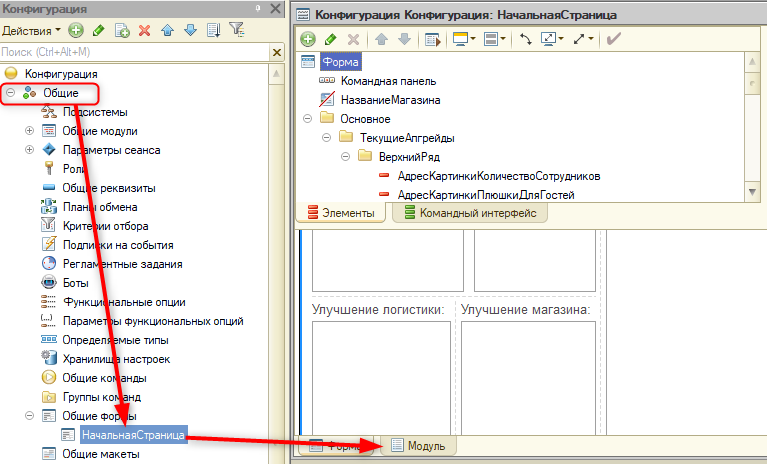
Рис. 12.1. Открытие модуля формы
Дополним процедуру "ОбновитьДанныеИгрока".
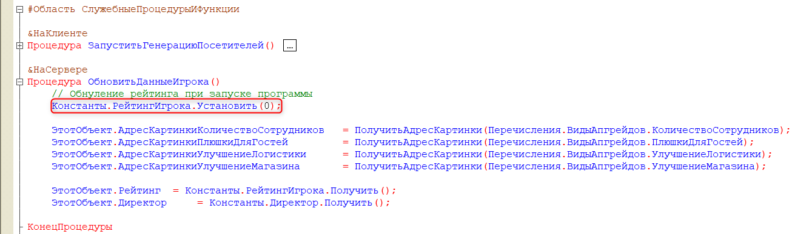
Но, если купить еще один апгрейд, например, "Скидочная карта", то после покупки рейтинг не изменится (рис. 12.2).
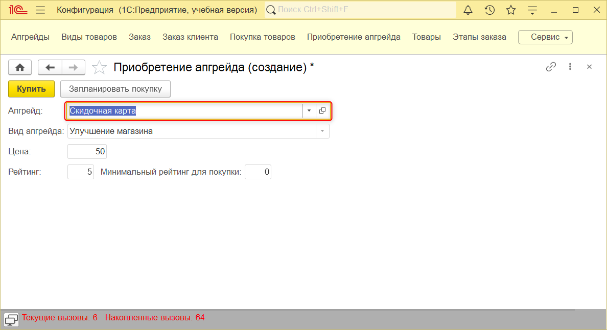
Рис. 12.2. Приобретение апгрейда
Рейтинг изменится, и картинка появится только после перезапуска игры (рис. 12.3).
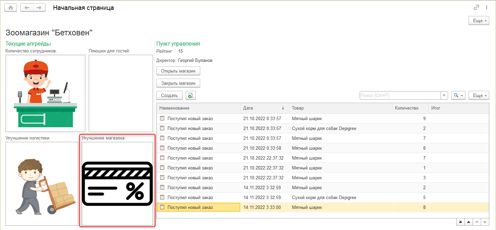
Рис. 12.3. Обновление данных при помощи перезапуска
Это происходит из-за того, что
начальной форме необходимо сообщить о том, что ей нужно снова
проанализировать купленные апгрейды и пересчитать рейтинг.
Автоматизация игрового процесса. Автоматическое обновление рейтинга
В момент, когда игрок приобретает
апгрейд, он закрывает форму путем нажатия кнопки "Купить". Добавим
событие "ПриЗакрытии" данной форме, которое будет сообщать начальной
странице, что ей необходимо обновиться.
Для этого закроем пользовательский режим, вернемся в конфигуратор и приступим к выполнению второй задачи.
Откроем редактор формы документа "ПриобретениеАпгрейда" (рис. 12.4).
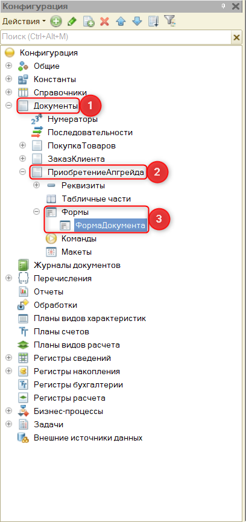
Рис. 12.4. Открытие редактора форм
Создадим событие "ПриЗакрытии" на клиенте (рис. 12.5).
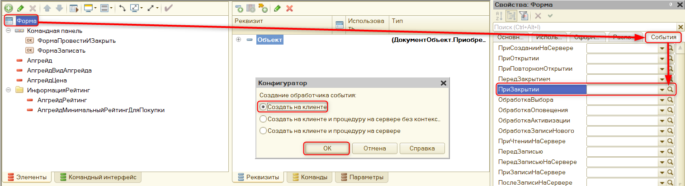
Рис. 12.5. Создание события "ПриЗакрытии"
В событии обратимся к процедуре "ОбновитьНачальныйЭкран" при помощи метода "Оповестить".
|
Метод "Оповестить()" отсылает оповещение всем созданным (не обязательно открытым) формам.
|
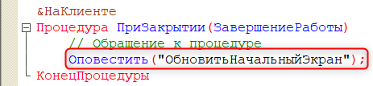
Скопируем название данной процедуры и вернемся в модуль общей формы "НачальнаяСтраница".
Создадим новое событие "ОбработкаОповещения". Определим его на клиенте (рис. 12.6).
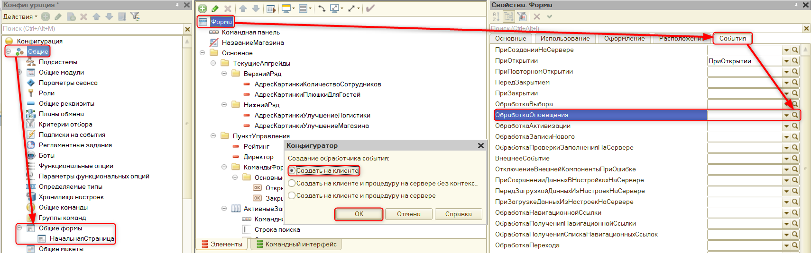
Рис. 12.6. Открытие модуля общей формы и создание события
У данного обработчика есть параметр
"ИмяСобытия", которое необходимо сравнить с только что созданной в
оповещении процедурой и обновлять данные при срабатывании оповещения.
Также перенесем данную процедуру в область "#ОбработчикиСобытийФормы".
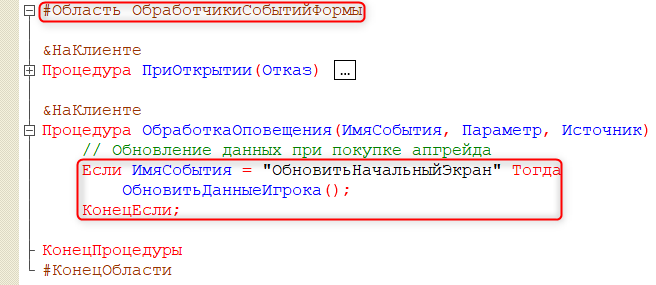
Обновим конфигурацию базы данных и запустим пользовательский режим для проверки работоспособности данного метода.
Для проверки приобретем апгрейд "Миска с водой" (рис. 12.7).
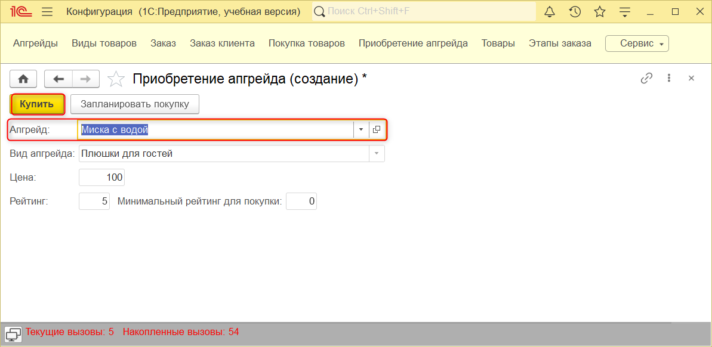
Рис. 12.7. Приобретение апгрейда "Миска с водой"
После приобретения откроем
начальную страницу. Рейтинг автоматически обновился, и появилась
соответствующая картинка (рис. 12.8).
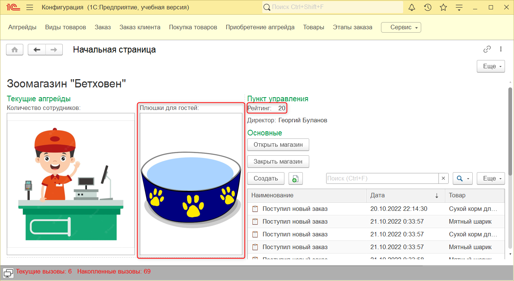
Рис. 12.8. Проверка автоматического обновления рейтинга
Автоматизация игрового процесса. Доработка автоматического поступления заказов
Перейдем к третьей задаче и
определим интервал поступления заказов на основе рейтинга. Рейтинг,
используемый в форме начального экрана, имеет значение типа "Число".
Соответственно, его можно использовать для сравнения с определенным
уровнем.
Реализуем частоту поступления заказов:
- если рейтинг ниже 50, тогда клиенты будут появляться раз в 10 секунд;
- если рейтинг выше 50, но ниже 100, – клиенты приходят раз в 7 секунд;
- если рейтинг выше 100 и ниже 150, – раз в 5 секунд;
- если рейтинг выше 150 и ниже 200, – раз в 2 секунды;
- если рейтинг выше 200, тогда клиенты приходят каждую секунду.
Закроем пользовательский режим и вернемся в конфигуратор.
Откроем модуль начальной страницы и
создадим новую клиентскую функцию "УзнатьИнтервалПоРейтингу" в области
"СлужебныеПроцедурыИФункции".
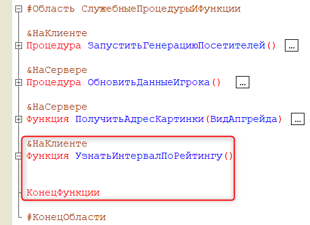
Данная функция будет состоять из конструкций "Если" и "ИначеЕсли".
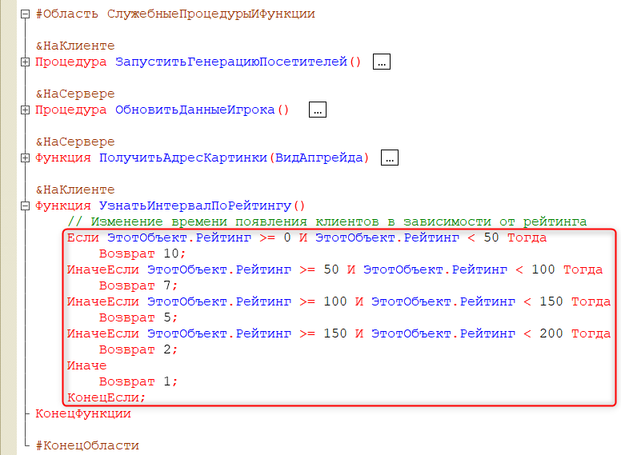
Узнавать рейтинг необходимо при
открытии магазина. Перейдем к процедуре обработчика события
"ОткрытьМагазин" и изменим ее с использованием новой функции.
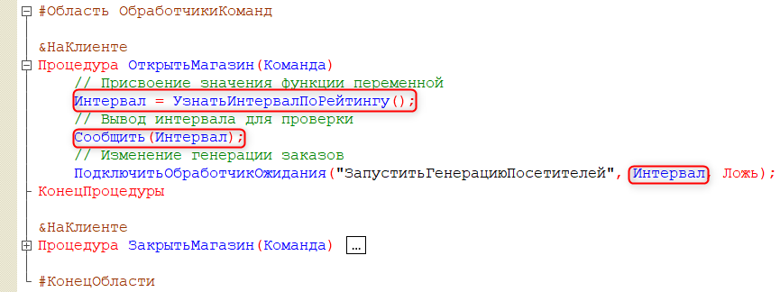
Обновим конфигурацию базы данных и запустим пользовательский режим.
При нажатии на кнопку "Открыть
магазин" появляется сообщение с интервалом появления посетителей, и
через 10 секунд появляется первый заказ (рис. 12.9).
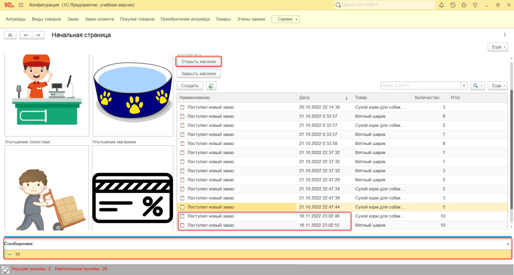
Рис. 12.9. Проверка работы алгоритма
На этом двенадцатое занятие окончено!
На этом занятии мы усовершенствовали
механизм вывода рейтинга игрока на начальный экран, настроили его
автоматическое обновление, а также описали алгоритм, благодаря которому
частота поступления заказов будет напрямую зависеть от рейтинга игрока.
На следующем занятии мы займемся финансовой составляющей игры.
Это нужно запомнить
|
|

|
Метод "Оповестить()" отсылает оповещение всем созданным (не обязательно открытым) формам.
Для того чтобы сравнить, больше или равно одно значение относительно другого, используется символ >=.
Если необходимо проверить выполнение сразу двух условий, используется логический оператор И.
|
Контрольные вопросы
- С помощью какого метода можно изменить значение константы?
- Какой метод сообщает формам, что произошло какое-то событие?
- Какой метод позволяет выводить информацию пользователю в нижней части экрана?